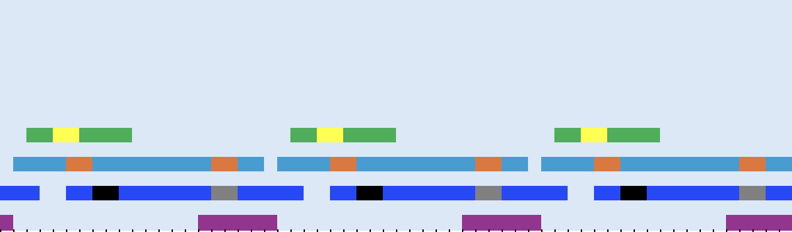
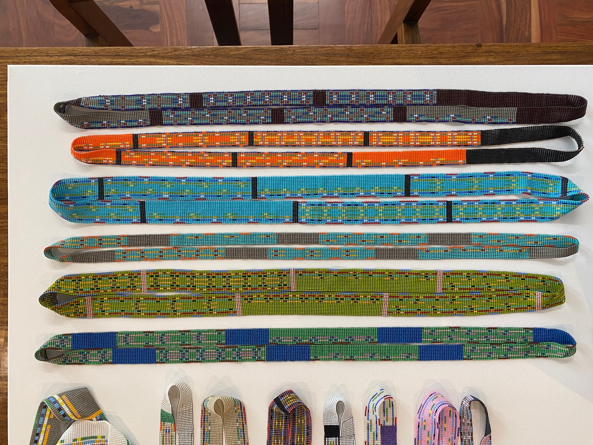
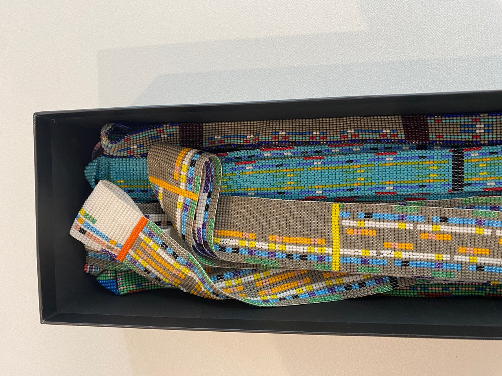
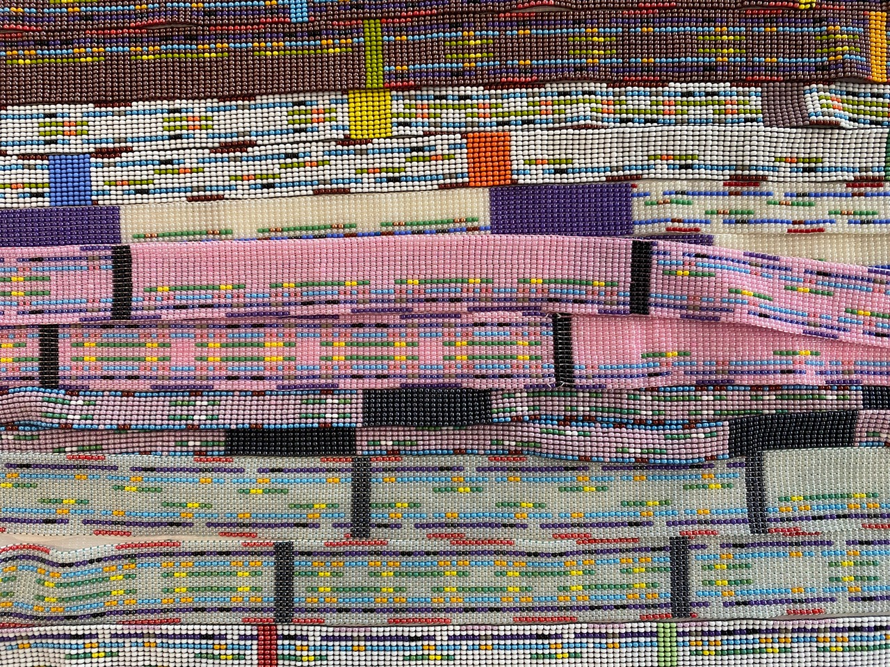
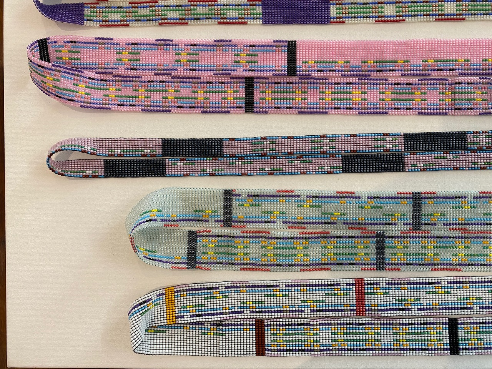
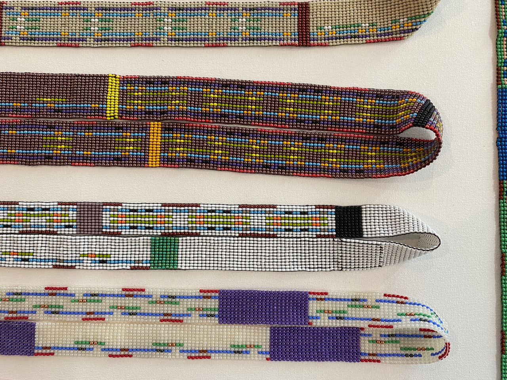

Translation only

Shift the pattern by one complete repeating unit and it looks exactly the same. This frieze has no additional symmetry.
Beaded necklaces based on the seven possible collections of frieze symmetries.
Discover Mathematical Marigolds, a collaboration between artist Joni Brenner and mathematician Steven Bradlow.
Explore the seven patterns
possible types of frieze symmetry
Symmetry, like colour or texture, is an attribute of a pattern. Mathematicians say that patterns have a symmetry if there is a transformation - such as reflection, rotation, translation, glide reflection - that leaves the pattern looking unchanged. A pattern may have multiple symmetries just as it may display multiple colours or textures.
A pattern which repeats in both directions along an infinite line is called a frieze pattern. The repeating nature of the pattern is called a translation symmetry. Frieze patterns can have other symmetries in addition to translation symmetry, but these can occur in only seven possible combinations. The patterns in the seven sections of the Mathematical Marigolds are all built from the same set of colored lines, but with these lines arranged in different ways to illustrate the seven possible combinations of frieze symmetries. We imagine extending these indefinitely to obtain the mathematical frieze.
Choose a pattern and an operation, then play the animation to see how the transformation acts on the original design. The complete mathematical discussion is in the accompanying essay.

Shift the pattern by one complete repeating unit and it looks exactly the same. This frieze has no additional symmetry.
Key: T = translation · V = reflection across a vertical line · H = reflection across a horizontal line · R = 180° rotation · G = glide reflection (reflection combined with a shift).
The necklaces are joined with a half-twist, creating a Möbius band—a famously one-sided surface such as the one in M.C. Escher's famous Möbius Strip II.
View Escher's Möbius Strip II (1963) at Museum Escher in The Palace ↗

The arrangements of colored beads make the repeating units and the symmetries of each design visible.
The beadwork is done in Bulawayo, Zimbabwe by the beaders of Marigold Beads. See www.marigoldbeads.com.



Joni Brenner, artist, and Steven Bradlow, Professor Emeritus of Mathematics at the University of Illinois Urbana–Champaign, developed Mathematical Marigolds as a meeting point of beadwork and mathematical ideas.